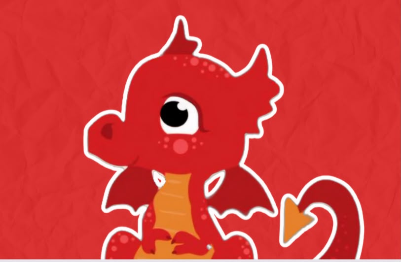
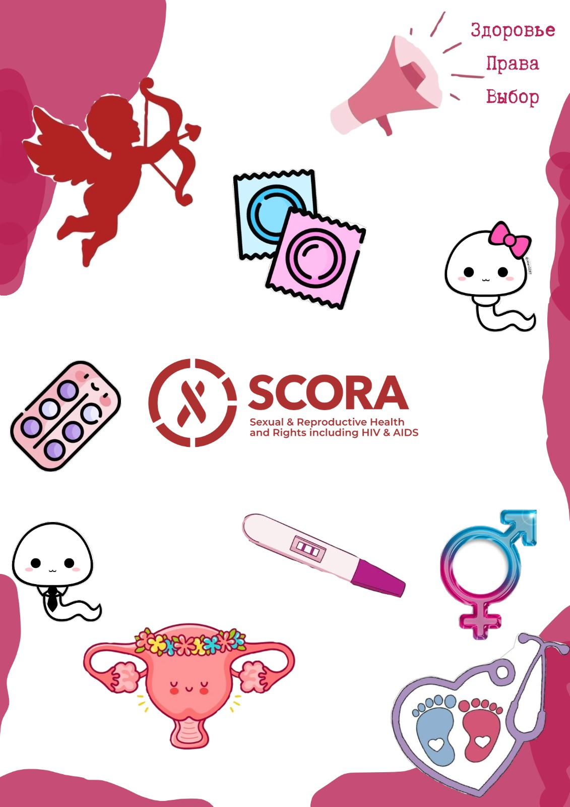
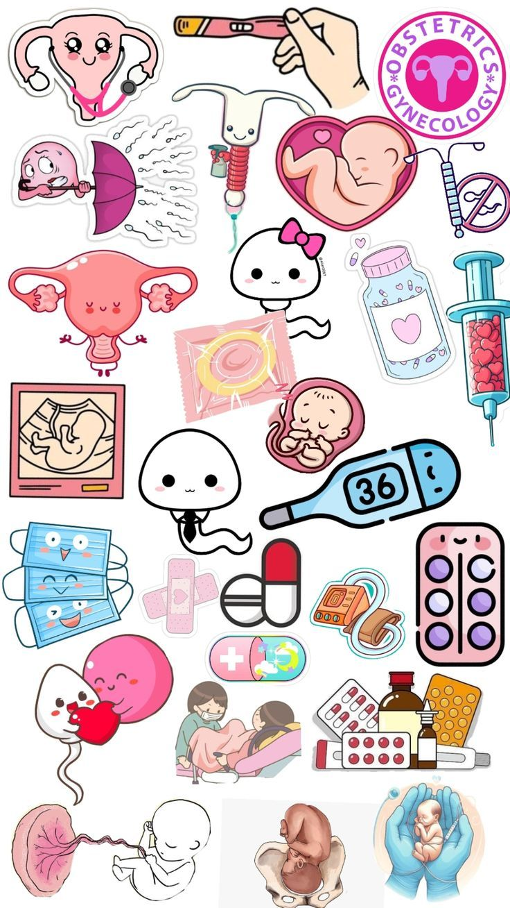

Наше видение
Мир, в котором каждый человек может свободно и на равных реализовывать свои права — без стигмы и дискриминации.
Мы — студенты-медики Караганды, которые открыто говорят о сексуальном и репродуктивном здоровье, правах человека и борьбе со стигмой.

SCORA — один из шести постоянных комитетов Международной федерации ассоциаций студентов-медиков (IFMSA).
Полное название — Standing Committee on Sexual and Reproductive Health and Rights including HIV and AIDS (Постоянный комитет по сексуальному и репродуктивному здоровью и правам, включая ВИЧ и СПИД).
С 1992 года комитет прошёл путь от работы с проблемами ВИЧ/СПИДа и стигмы до широкого спектра вопросов сексуального и репродуктивного здоровья и прав.
Мир, в котором каждый человек может свободно и на равных реализовывать свои права — без стигмы и дискриминации.
Давать студентам-медикам знания и инструменты для грамотного и культурно-чувствительного просвещения и защиты прав.

Знания, которые помогают.
Диалог, который меняет.
Просвещение, профилактика, борьба со стигмой и дискриминацией людей, живущих с ВИЧ.
↗Достоверная информация о теле, отношениях, согласии, контрацепции и здоровье.
↗Планирование семьи, безопасная беременность и охрана материнского здоровья.
↗Профилактика, информирование и поддержка в вопросах насилия по признаку гендера.
↗Недискриминация по признаку сексуальной ориентации и гендерной идентичности.
↗Мы поддерживаем доступ к научно обоснованной информации, свободу от стигмы, гендерное равенство, защиту от насилия и уважение к каждому человеку.

WE CARE ♥KazMSA — Kazakhstan Medical Students’ Association, национальная ассоциация студентов-медиков Казахстана и член IFMSA. Локальный комитет SCORA Karaganda объединяет студентов-медиков Караганды.
Мы хотим, чтобы о сексуальном и репродуктивном здоровье можно было говорить открыто — среди будущих врачей и молодёжи нашего города.
Образовательные мероприятия для студентов и школьников
Кампании по повышению осведомлённости
Снижение стигмы вокруг ВИЧ и репродуктивного здоровья
Сотрудничество с комитетами KazMSA и IFMSA
Участие в национальных и международных проектах SCORA
Организации Караганды и области, работающие в смежных направлениях. Перечень не означает официального партнёрства.
Поддержка людей, живущих с ВИЧ: психосоциальная помощь, сопровождение и снижение стигмы.
Карагандинский областной центр по профилактике и борьбе со СПИДом — работа в сфере профилактики ВИЧ.
Учишься на медика в Караганде? Приходи на наши мероприятия, знакомься с командой и предлагай свои идеи. Не из Караганды? Присоединяйся к национальной SCORA KazMSA.